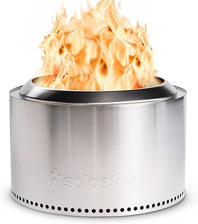
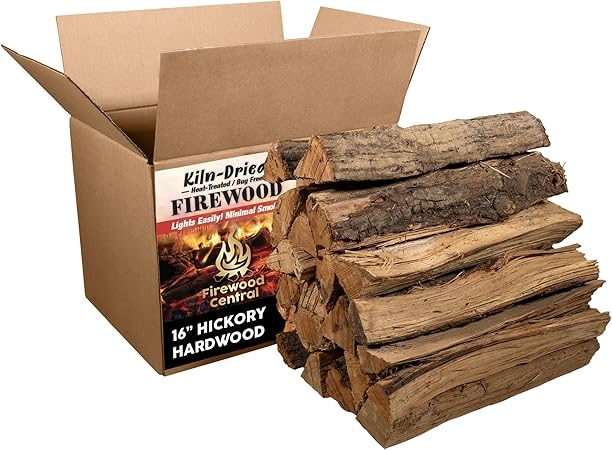

← boxohardfirewood.com
How to Pick the Right Boxohardfirewood (2026 Edition)
May 2026
If you've been researching boxohardfirewood lately, you know the market changed a lot in 2026. New options, shifting prices, and plenty of noise to cut through.
Pro Tips
- Set a firm budget before browsing. It's easy to creep up $50-100 comparing boxohardfirewood features.
- Amazon's return policy removes most of the risk when buying boxohardfirewood you haven't seen in person.
- The Q&A section on boxohardfirewood listings often answers questions that no review covers.
- Check "Frequently Bought Together" — it shows what extras you might need for your boxohardfirewood.
What NOT to Do
- Blind brand loyalty — Your favorite brand might not make the best boxohardfirewood. Stay open to better options.
- Ignoring the fine print — Some boxohardfirewood listings look great until you realize key parts are sold separately.
- Skipping negative reviews — A 4.5-star product with durability complaints tells you more than a 5-star product with 8 reviews.
Tried and Tested

→ #4 — Firewood Central Kiln-Dried PA Hickory 16" Splits Approx 38 lb Long Burn — Consistently rated
→ #3 — 15" Oak Firewood Logs with Fire Starters Set Kiln-Dried Wood for Fire Pit — Fan favorite
→ #2 — Old Potter Kiln Dried Firewood 1.5 Cu Ft 38-45 lbs for Solo Stove Firepits — Highly reviewed

→ #5 — Firewood Central Kiln-Dried PA Oak 16" Splits Approx 38 lb Bold Smoking Woo — Editor's pick

→ #1 — Old Potter Kiln Dried Firewood 1.5 Cu Ft 38-45 lbs for Solo Stove Firepits — Best seller
Our Take
We update our boxohardfirewood reviews as new products launch. Bookmark boxohardfirewood.com for the latest.
Affiliate Disclosure: As an Amazon Associate, we earn from qualifying purchases. This doesn't affect our recommendations.